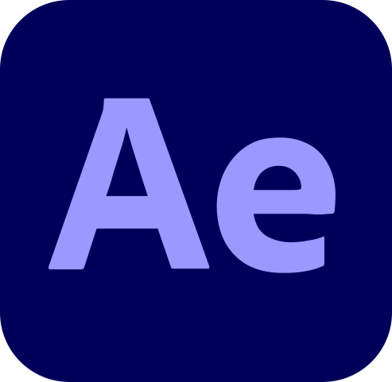
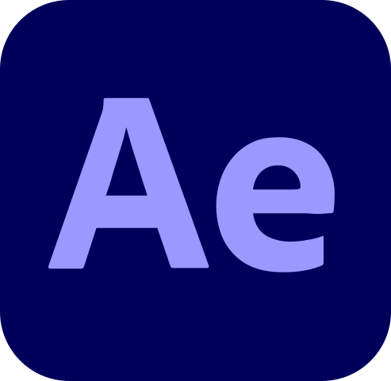
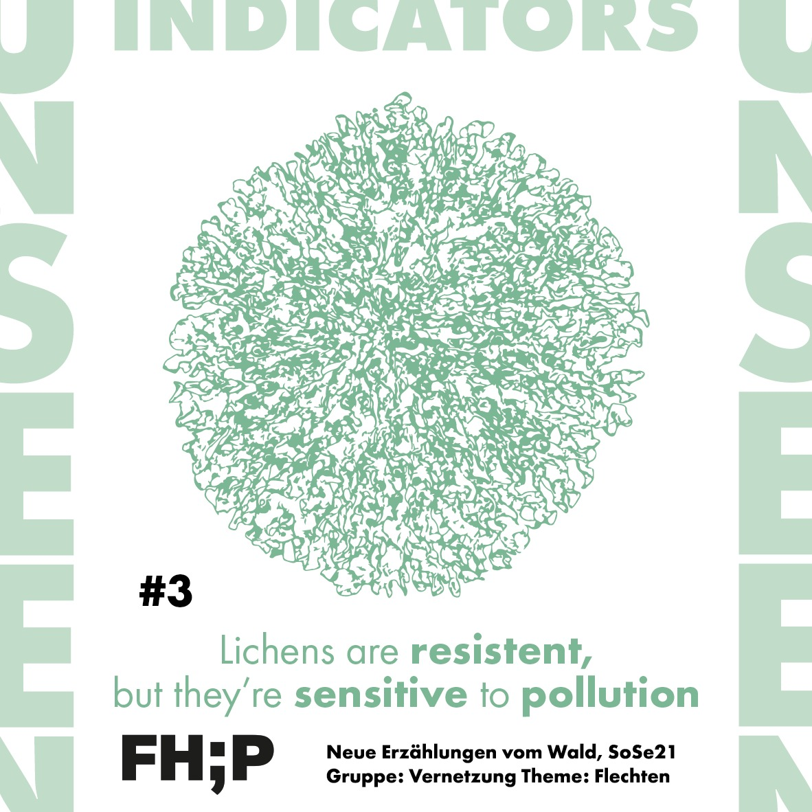
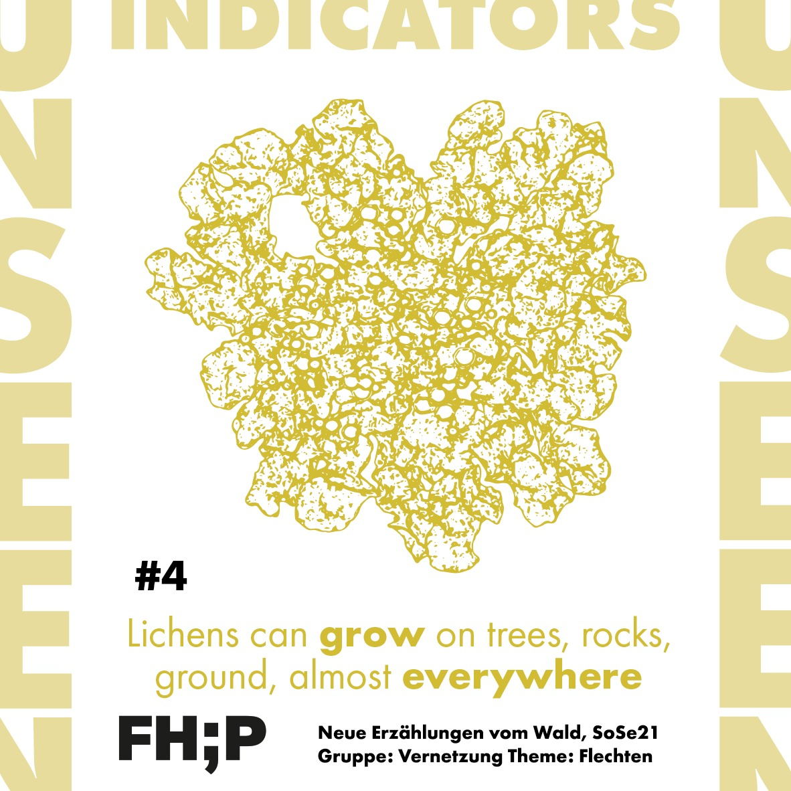
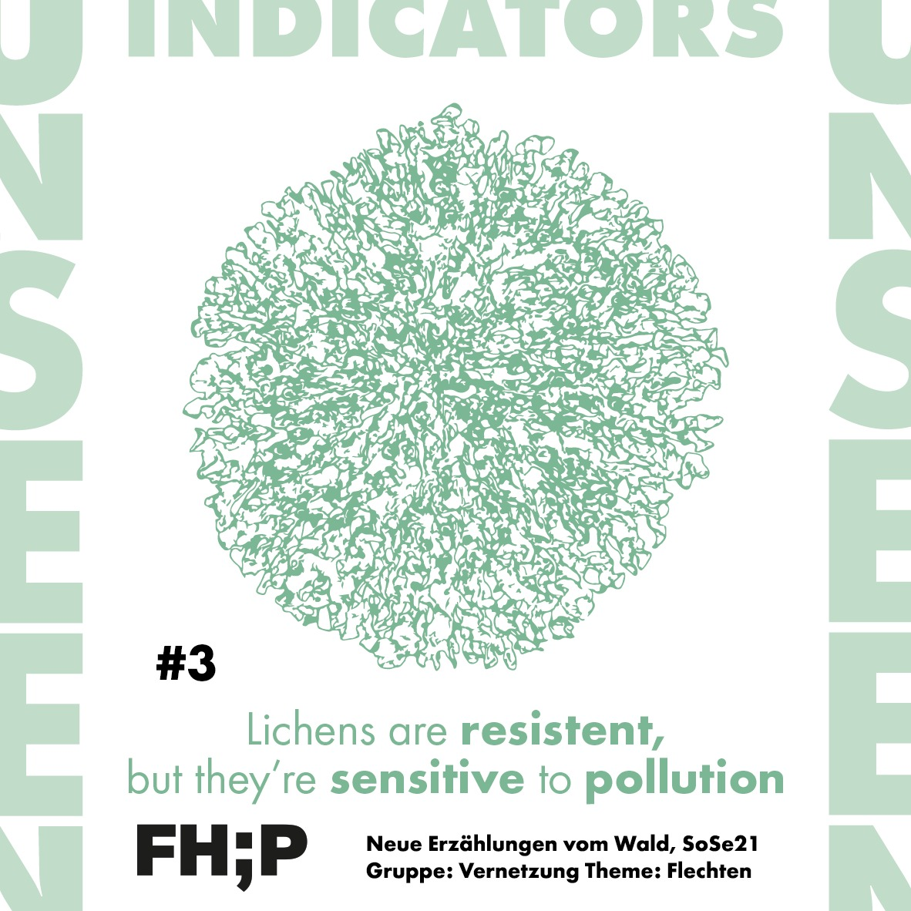
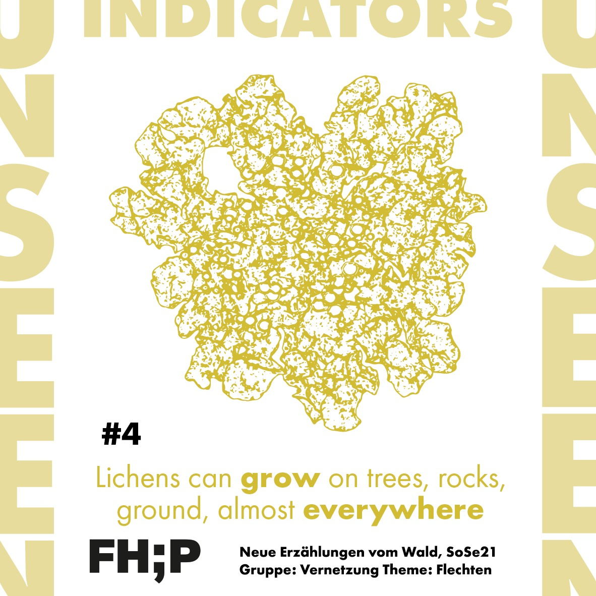

About me
Here you can get a quick summary of my abilities and skills and the main softwares i can use
My Skills
Software
Skills
Graphic Design & Video Editing


 


I have a strong competence with the most common graphic design and video editing software from Adobe. Over the years, I have gained extensive experience and proficiency in a wide range of design and video editing tools. My skill set includes creating visually appealing graphics, designing professional layouts, and producing high-quality videos.
Coding & Web developement


I have developed a passion for coding and gained a good experience in front-end developement for desktop and mobile. I am adept at making API calls to integrate various services and functionalities into my projects. This comprehensive skill set allows me to deliver high-quality, user-friendly, and performant web applications tailored to meet specific project requirements and client needs.
Prototiping tools


I have the ability to create interactive prototypes using a variety of software tools. My experience with these applications allows me to design and test user interfaces and experiences with precision and creativity, with Unity, i'm able to create immersive 3D prototypes and simulations, making it ideal for more complex and interactive projects.
Office Package


I can efficiently use the main software applications from the Microsoft Office package for various tasks. This proficiency enables me to produce well-structured documents, manage and analyze data effectively. This comprehensive skill set ensures that I can integrate seamlessly into a company's operations, contributing to efficient project execution, effective data management, and professional communication.
3D Modelling


I have a basic experience with Autodesk 3DSmax and Blender for what regards the developement of 3D projects
Theorical
Skills
User and usability Sudies
I can succesfully apply the main methods and tools to run user studies; both qualitative and quantitative. I can map research insights through most common schemes and digrams in particular i’m confident with:
- Participied observation
- User Path & User Journey
- Emphaty map
- Surveys
- Shadowing
- Interviews
- Personas
Service Design & Service Analisys
I can succesfully apply the main methods and tools to run user studies; both qualitative and quantitative. I can map research insights through most common schemes and digrams in particular i’m confident with:
- Value Proposition Canvas
- PEST & SWOT Analysis
- Service Blueprint
- Service Workflow
- Features Map
- Kano model
- System Map
Narration & Storytelling
Thanks also to my classical studies, I can use proper and evocative language, creating strong narratives supporting my projects; i’m particulary expert with the concepts of:
- Narratives plots
- Astraction of meaning
- Symbols & rethorical figures
Branding & Coordinate Image
During my studies I often faced the concept of “brand” how to define and decline it, both from a graphic and a rethoric point of view, being able to produce the following outputs:
- Core values
- Tone of Voice
- Brandbook
- Logotype design
- Web templates
- Print templates
UX Design
I am perfectly able to turn insights and brief into design solution and to create valuable experiences which fit their purpose. I am particulary confident with:
- Activity Design
- A/B Testing
- Prototype
- Heuristic evaluation
- Wireframes
- Design mockups
Artificial Intelligence
I faced multiple the usage of AI in the design process. I have a good comprehension of the possibilities and limits of different AI tools and I know how to employ at best:
- Generative AI
- Evolutionary AI
- Rule based systems
- AI assistants
- Computer vision
- Nearest Neighbors
- Baesyan networks
Neuroscience & Cognitive science
I managed to get a good knowledge about the inconsious processes that leads our choiches and actions and i can turn them into design assets, i’m particularly informed about:
- Emotion Theory
- Memory creation
- System 1 and 2
- AI assistants
- Computer vision
- Nearest Neighbors
- Baesyan networks
- Learning processes
- Neuro - Marketing
- Neural interfaces
Communication & Media Science
I had the chance to study in detail the different aspects behind communication and media consumption. I can effectively analyze communicative artifacts for what regards:
- Media Sociology
- Meaning theory
- Audience Studies
- Spreadability
- Media Psychology


 


